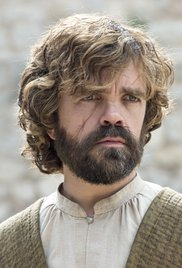

| Évad Száma |
Első rész megjelenése |
Utolsó rész megjelenése |
Novellák feldolgozva |
| 1 |
2011. április 17. |
2011. június 19. |
A Game of Thrones |
 |
| 2 |
2012. április 1. |
2012. június 3. |
A Clash of Kings, A Storm of Swords |
|
| 3 |
2013. március 31. |
2013. június 9. |
A Storm of Swords |
 |
| 4 |
2014. április 6. |
2014. június 15. |
A Storm of Swords, A Feast for Crows, A Dance with Dragons |
 |
| 5 |
2015. április 12. |
2015. június 14. |
A Feast for Crows, A Dance with Dragons, A Storm of Swords, The Winds of Winter |
|
| 6 |
2016. április 24. |
2016. június 26. |
The Winds of Winter, A Feast for Crows, A Dance with Dragons |
 |
| 7 |
2017. július 16. |
2017. augusztus 27. |
The Winds of Winter, A Dream of Spring |
 |
| 8 |
2019. április 14. |
2019. május 19. |
The Winds of Winter, A Dream of Spring |
|